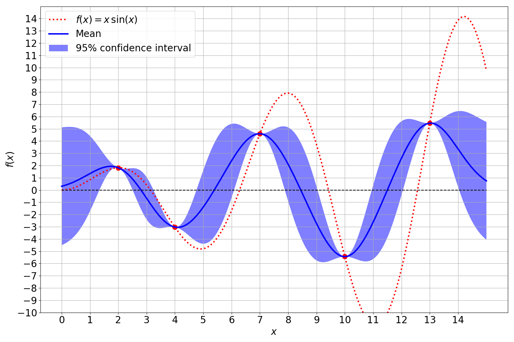
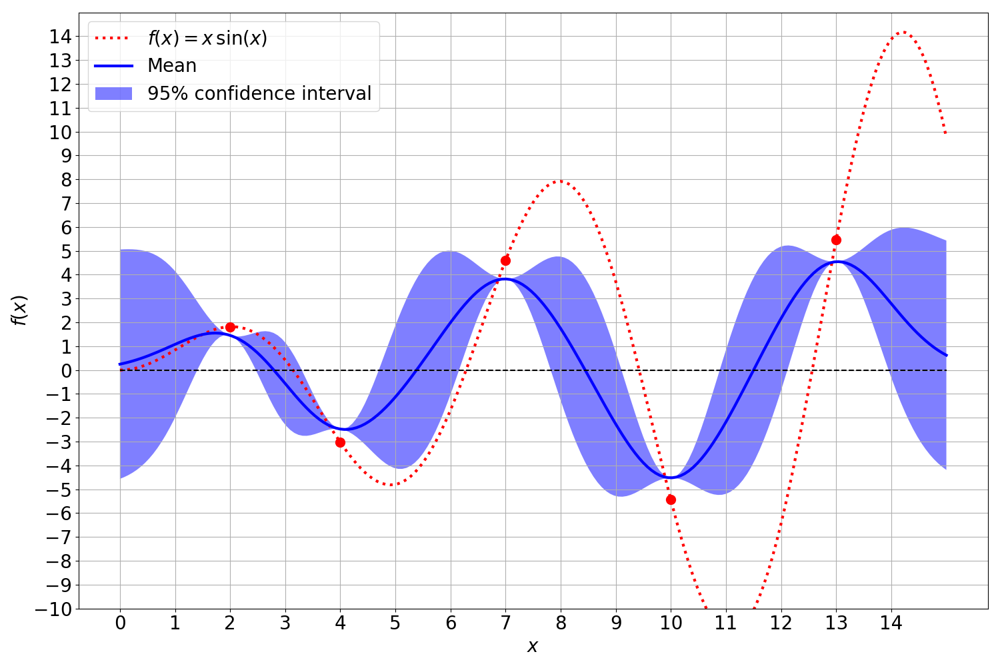
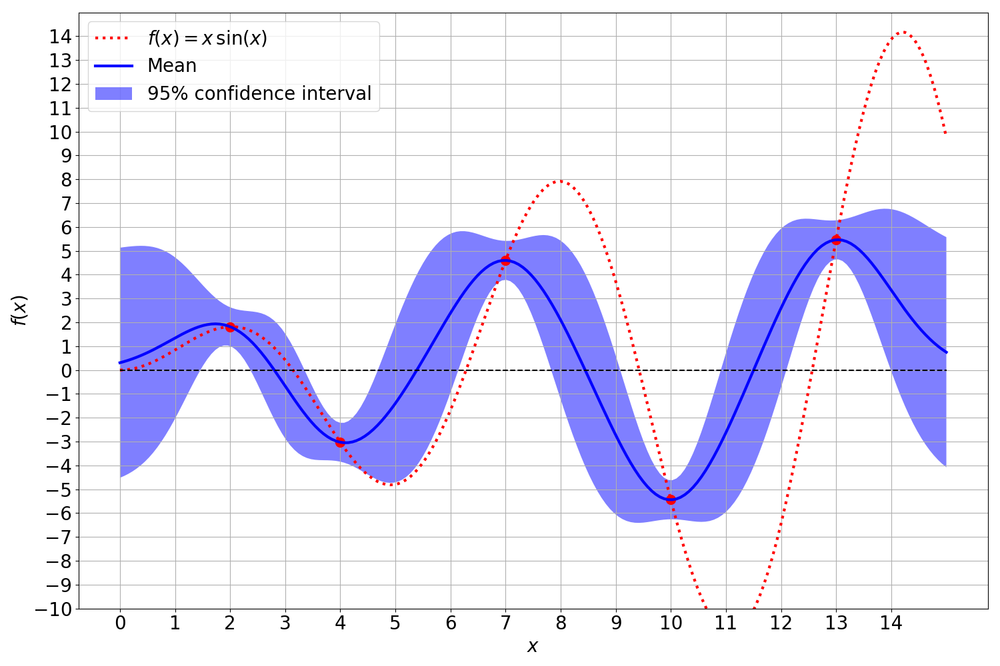
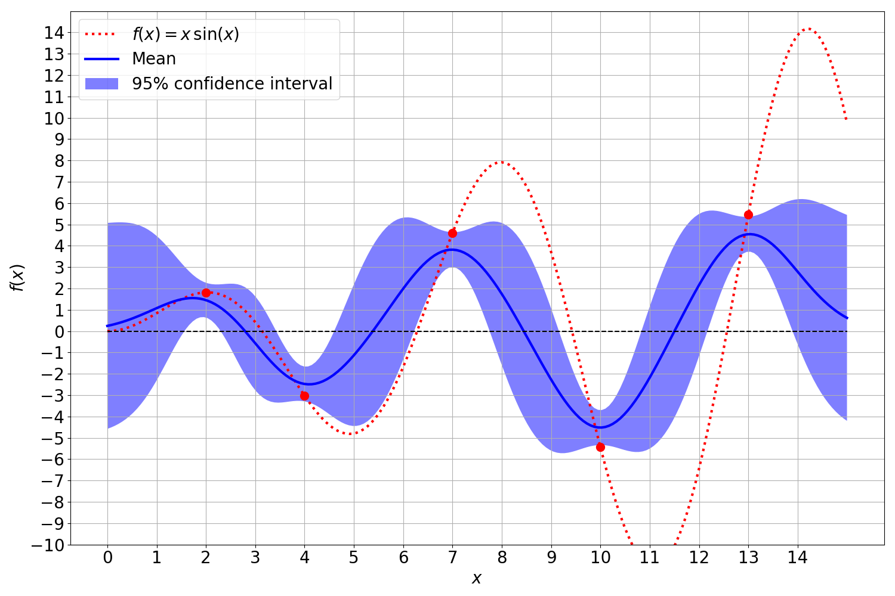
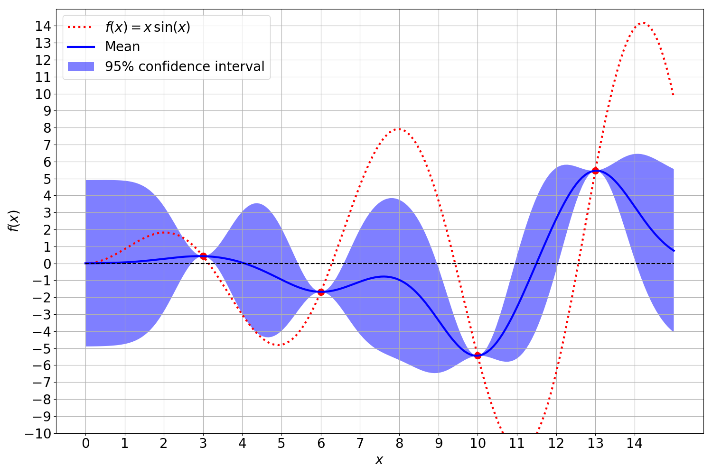
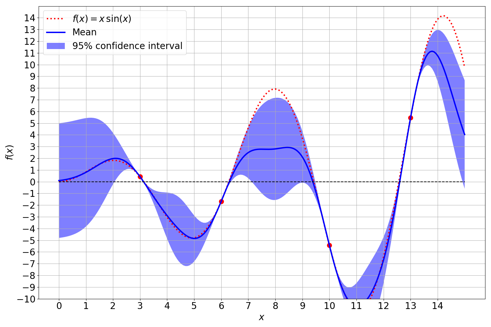

Gaussian Processes - Extensions
Extensions to Gaussian Processes

Noise
In the real world, the observations onto which the Gaussian process is fitted are often influenced and distorted by noise. This noise is modeled as a independent, identically distributed normal distribution around zero with an error variance $\sigma^2_{\varepsilon}$:
The covariance matrix between the respective observations with noise is modified on the diagonal entries. The linear covariance operator can be applied independently to both the objective function evaluation and the noise, yet the noise variance can only be included for the diagonal entries of the covariance matrix. This is due to the assumption of independent, identical distributed noise, which is uncorrelated between observations.
Gaussian process without noisy observations:

Gaussian process with noise only on the mean of the posterior distribution:

Gaussian process with noise only on the variance of the posterior distribution:

Gaussian process with noisy observations affecting both the mean and the variance:

This can be realized with the addition of the noise’s variance to the diagonal entries of the covariance matrix of the observation kernel matrix $K_{XX}$:
where $I$ is an identity matrix $I\in \mathbb{R}^{N \times N}$. While the noise itself decreases the precision with which we can fit the GP to the observations, it has convenient numerical properties. The Gramian block matrix $K_{XX}$ has to be inverted during the computation of the mean and covariance function. Due to possible rank defincencies, $K_{XX}$ can become singular which prohibits its inversion. Rank definencies in the covariance matrix can arise when two observations are numerically almost identical. Incorporating the noise variance into the covariance matrix can be thus regarded as a regularization of the Gaussian process. This opens the possibility of different regularization themes as both the mean and variance can be independently regularized with respect to the inverse of $K_{XX}$ in $\mu(y_* )$ and $\Sigma(y_* )$.
Model Selection
The optimization of hyperparameters in machine learning is a pivotal process which can influence the performance significantly. In this regard, Bayesian methods offer a substantial advantage over non-Bayesian methods as the optimal hyperparameters can be automatically recovered from the Bayesian model. For a supervised learning task, the objective is to maximize the likelihood probability of the targets $p(\mathcal{D})$.
A central aspect of Bayesian methods is the placement of a prior $p(\theta)$ over possible values of $\theta$ which encodes the prior belief what values of $\theta$ are regarded as probable. Instead of considering a single value for $\theta$ a probability distribution is used that assigns a different weighting to different values of $\theta$. This is especially important in tasks with small datasets where the likelihood is sensitive to the variability in the data.
The prior can be marginalized to evaluate its influence on the data likelihood. The objective is therefore to find suitable distributions for $\theta$ which increase the likelihood of the data, ie.
In the case of Gaussian processes with the squared exponential kernel, the hyperparameters are $\theta = \{ \alpha, \sigma \}$ for which we seek values that maximize the probability of the data, i.e.
where the parameters $\theta$ determine the Gramian matrix $k(XX;\theta)$. The maximization of the data likelihood is commonly reformulated as a minimzation of the negative log-likelihood. Working with the log-probability offers a higher numerical stability with respect to floating-point arithmetic of modern computers.
The optimization of the log-likelihood can be done with regular optimization algorithms such as limited memory BFGS.
Derivative Information
Gaussian processes in their traditional definition are described as a Gaussian distribution over possibly infinite observations. A Gaussian process computes a predictive distribution for $y_*$ such that predictions are close to observations in their vicinity. We can expand the Gaussian process by including derivative observations into the set of observations which enforces a similarity in the gradients of the predictions with respect to observations in their vicinity:
The joint distribution over predictions, derivative observations and observations can be modeled as a Gaussian over all three types of observations:
with the expanded covariance matrix which now includes similarity measures between predictions, observations and derivative observations:
The posterior distribution including derivative observations can be derived from the joint distribution with the matrix inversion lemma in the same manner as seen above. The mean and covariance of the posterior distribution with derivative observations can be computed with the expanded kernel matrices:
The Gramian block matrices between predictions, observations and derivative observations can be computed with updated kernels with incorporate the derivative observations. More precisely, the covariance between two any entries in the observation respectively prediction vector are defined as
These updated kernels can be derived in a fairly straightforward manner since the covariance with the zero mean assumption is a linear operator. In order to expand the Gaussian process with derivative observations we have to take the derivative of the kernel and expand the covariance matrix with the respective entries:
While derivative observations themselves are usually hard to come by for computationally expensive functions $f(x)$, derivative observations are of numerical advantage in cases where observations lie very close to each other. In these cases the inversion can become unstable or even impossible due to the rank definciency. Derivative observations pose a useful way to circumvent such rank definciencies for very close observations by combining two observations into one observation and a derivative observation.
A Gaussian process:

The same Gaussian process with derivative observations. The GP is able to fit the true function considerably better:
